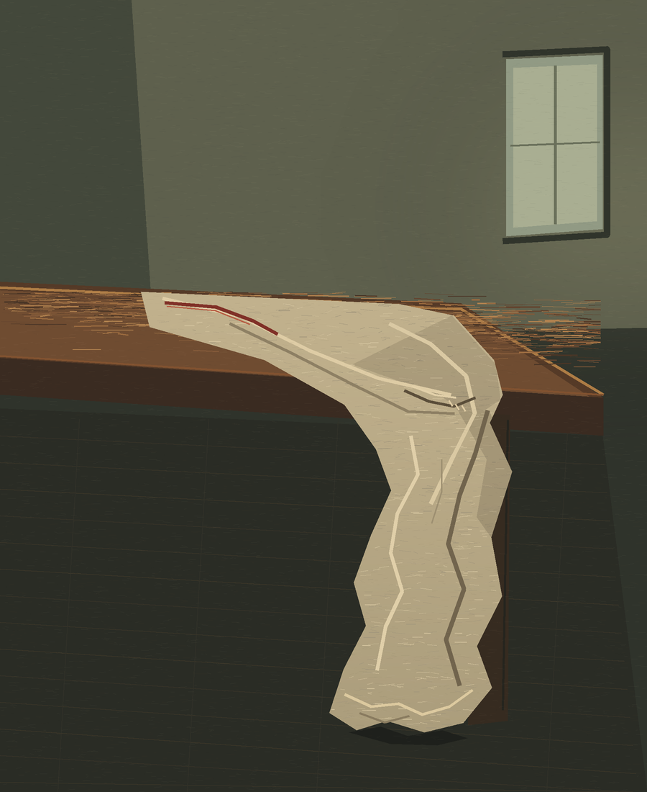

A length of linen catches at the table's corner and turns down beside its leg. The room keeps the small change in the cloth after the hand has gone.

The Turn Remains. The red edge arrives across the tabletop, then disappears into a fold at the corner. The cloth's turn brings the table close without setting an empty chair in for the viewer.